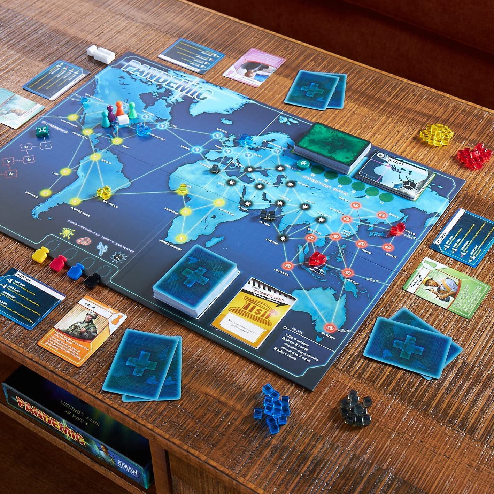

Pandemic (Пандемия)
Тип: кооперативная настольная игра, стратегия
Игроков: 2–4 человека (до 5 с дополнением)
Время партии: 45–60 минут
Возраст: от 8 лет
Сложность: средняя (правила объясняются за 5–10 минут)
Состав комплекта
В коробке находится всё необходимое для спасения мира:
- 1 игровое поле с картой мира (48 городов);
- 7 карт ролей (с уникальными способностями);
- 7 фишек игроков;
- 59 карт игроков (48 карт городов, 6 карт эпидемий, 5 карт событий);
- 48 карт болезней (инфекций);
- 96 кубиков болезней (по 24 штуки 4 цветов);
- 6 исследовательских станций;
- 4 маркера болезней, маркеры распространения и вспышек;
- памятки игроков и правила игры.
Правила и механика
Цель игры — всем игрокам совместно победить четыре смертельно опасные болезни. Вы выигрываете, как только изобретёте лекарства от всех четырёх недугов. Вы проигрываете, если происходит одно из трёх событий: вирус распространяется слишком быстро (8 вспышек), кубики одного цвета заканчиваются, или колода карт игроков заканчивается.
В отличие от большинства настольных игр, здесь нет единоличного победителя. Вы либо побеждаете всей командой, либо проигрываете. Каждый игрок выбирает или получает случайным образом одну из семи уникальных ролей:
- Врач (Medic). Может лечить болезни эффективнее (убирает все кубики болезни из города за одно действие).
- Учёный (Scientist). Ему нужно на 1 карту меньше для изобретения лекарства (4 вместо 5).
- Исследователь (Researcher). Может легче передавать карты другим игрокам.
- Специалист по операциям (Operations Expert). Может строить исследовательские станции быстрее и без карт.
- Диспетчер (Dispatcher). Может перемещать фишки других игроков по своему усмотрению.
- Планировщик (Contingency Planner). Может забирать сыгранные карты событий и использовать их повторно.
- Специалист по карантину (Quarantine Specialist). Защищает свой город и соседние города от заражения.
Ход игрока
В свой ход вы должны выполнить 4 действия (в любой комбинации):
- Перемещение: Переместиться в соседний город, использовать карту города для полёта в любой город или использовать карту «Чартерный рейс» для полёта в любой город.
- Лечение: Убрать 1 кубик болезни из города, в котором вы находитесь.
- Обмен знаниями: Передать карту города другому игроку (или получить от него), если вы находитесь в этом городе.
- Построить станцию: Построить исследовательскую станцию в текущем городе, сбросив карту этого города.
- Изобрести лекарство: Находясь на исследовательской станции, сбросить 5 карт одного цвета, чтобы изобрести лекарство от этой болезни.
После выполнения действий вы берёте 2 карты игрока и разыгрываете карты инфекций (сколько карт — зависит от уровня заражения), размещая кубики болезней на карте мира.
Эпидемии и вспышки
Среди карт игроков есть карты «Эпидемия». Когда вы берёте такую карту, происходит следующее:
- Усиление: Уровень заражения повышается (вы начинаете брать больше карт инфекций каждый ход).
- Заражение: Вы берёте карту из нижней части колоды инфекций и ставите 3 кубика болезни в указанный город.
- Вспышка: Если в городе уже есть 3 кубика и вы добавляете четвёртый, происходит вспышка. Все соседние города получают по 1 кубику болезни. Это может вызвать цепную реакцию. Каждая вспышка увеличивает маркер вспышек, и если он достигнет 8 — вы проиграли.
Конец игры
Игра заканчивается победой всей команды, как только вы изобретёте лекарства от всех четырёх болезней. Вы проигрываете, если произойдёт 8 вспышек, закончатся кубики хотя бы одного цвета или в колоде игроков не останется карт.